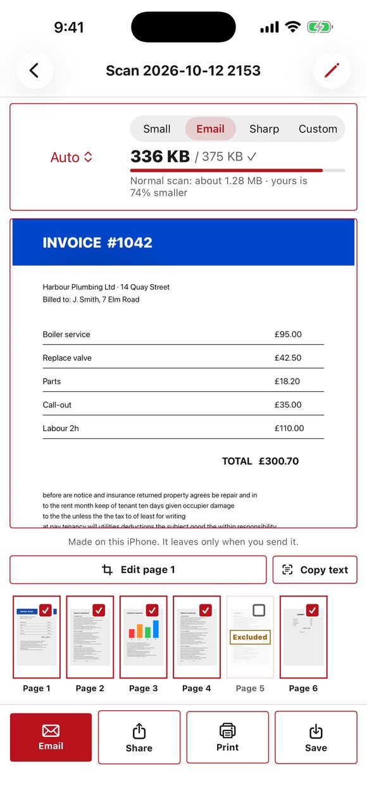
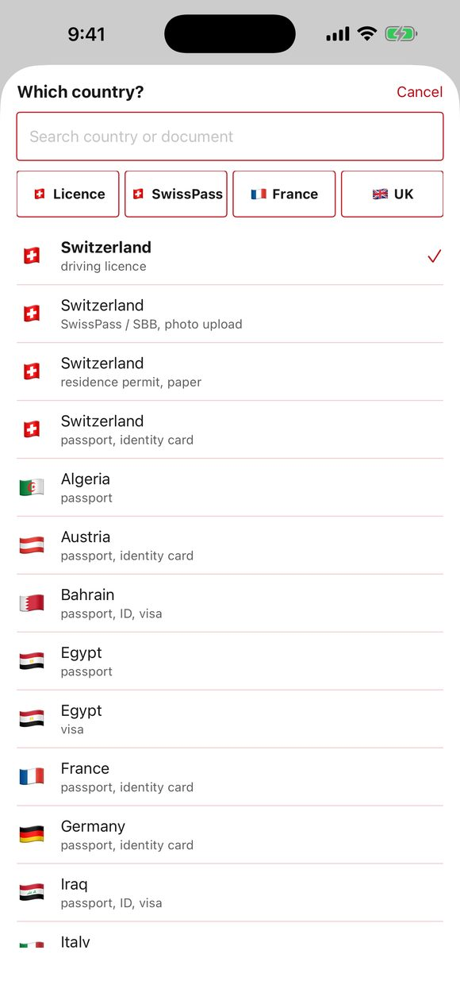
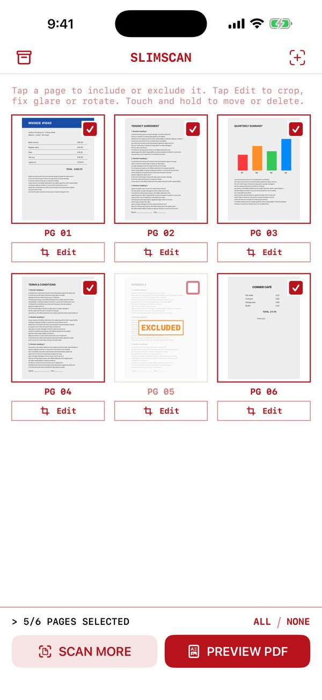

صُنع في سويسرا · بلا حساب · بلا سحابة
ملفات PDF صغيرة، جاهزة للبريد.
امسح الورق أو صغّر ملف PDF لديك: 20 صفحة بأقل من 1.5 ميغابايت. وصور الهوية والتأشيرة أيضاً.
أندرويد: قريباً على Google Play
3 ملفات PDF مجاناً، ثم النسخة الكاملة بدفعة واحدة. بلا اشتراك.

ماذا يفعل
على آيفون وأندرويد
-
مسح مستند
تصحيح الحواف والظلال، ويصبح النص أبيض وأسود واضحاً.
-
تصغير ملف PDF كبير
شارك أي ملف PDF مع SlimScan: كان 14 ميغابايت وأصبح 1.3 ميغابايت.
-
من الصور إلى PDF
حوّل صورك إلى ملف PDF صغير واحد.
-
صورة الهوية والتأشيرة
المقاس الصحيح، خلفية سادة، مع فحص. ملف الصورة للنماذج الإلكترونية؛ الوثائق السويسرية أولاً.
لا علاقة لنا بأي جهة حكومية. تأكّد من الشروط لدى الجهة المُصدِرة.
-
إزالة البيانات المخفية
اعرض الموقع والكاميرا والمؤلف في الصور وملفات PDF وأزلها.
-
نسخ النص
انسخ النص من أي صفحة.

صور الهوية والتأشيرة للنماذج الإلكترونية 
اضغط على صفحة لاستبعادها
مسافر؟ التأشيرات ومواعيد السفارات
بوابات التأشيرة الإلكترونية وأنظمة مواعيد السفارات والقنصليات تقبل غالباً ملفات PDF أو JPG فقط، وبحجم لا يتجاوز بضع مئات من الكيلوبايت. يجعل SlimScan ملفك مناسباً قبل الرفع.
- حدّك أنت: اختر «مخصص»، واكتب 500 كيلوبايت، وسترى الحجم وعلامة ✓.
- ملف واحد: صفحة الجواز وكشف الحساب والحجز في ملف PDF صغير واحد.
- دون إنترنت: في المطار أو في وضع الطيران (أندرويد: بعد أول مسح).
- صورة التأشيرة: بالمقاس الصحيح للوثيقة التي تختارها.
لا علاقة لنا بأي جهة حكومية أو بوابة تأشيرات. تحقّق دائماً من الشروط الحالية.
مستنداتك تبقى على هاتفك
آيفون
المعالجة على الآيفون. بلا حساب ولا تتبّع ولا تحليلات. لا شيء يغادر الآيفون إلا إذا أرسلته أنت. يعمل في وضع الطيران.
أندرويد
مستنداتك لا تغادر هاتفك إلا إذا أرسلتها أنت. يستخدم SlimScan مكتبة ML Kit من Google، وتشمل ماسح المستندات من Google (جزء من خدمات Google Play). ترسل ML Kit إلى Google بيانات تشخيص تقنية (طراز الجهاز، إصدار التطبيق، الأداء، معرّف تثبيت عشوائي)، ولا ترسل أبداً مستنداتك أو صورك أو نصوصك.
صُنع في سويسرا. ليس لدى SlimScan خادم، لذا لا تصلنا مستنداتك أبداً: لا شيء لدينا لنخزّنه أو نفقده أو نسلّمه. اقرأ سياسة الخصوصية (بالإنجليزية)
الدعم
لديك سؤال، أو هناك شيء لا يعمل؟ أخبرنا بطراز هاتفك وما كنت تحاول فعله؛ لقطة الشاشة تساعد. نقرأ كل رسالة بأنفسنا.
أسئلة وأجوبة
بوابة التأشيرة تقبل فقط ملفات أقل من 500 كيلوبايت.
امسح الصفحات، أو اضغط تصغير ملف PDF كبير. اختر مخصص، واكتب 500 كيلوبايت، وارفع الملف عندما ترى علامة ✓. إن لم يصغر بما يكفي، جرّب أبيض وأسود أو عدداً أقل من الصفحات. البوابة تطلب JPG؟ مشاركة كصور (JPG) تعطي صورة لكل صفحة؛ وهذه لا تتبع حد «مخصص»، فتحقّق من حجمها. لصورة التأشيرة: صورة الهوية والتأشيرة، ثم وثيقتك، أو «مقاس مخصص» مع حد ملفك.
كيف أصغّر ملف PDF موجوداً لدي؟
اضغط تصغير ملف PDF كبير في SlimScan، أو شارك ملف PDF مع SlimScan من البريد أو الملفات أو واتساب أو المتصفح.
كم سيكون حجم ملفي؟
مع بريد (الافتراضي)، نحو 75 كيلوبايت للصفحة: 20 صفحة بأقل من 1.5 ميغابايت. اختر صغير لأصغر ملف، أو واضح لتفاصيل أكثر، أو مخصص لتحديد حدك الخاص.
لماذا بعض الصفحات بالأبيض والأسود؟
في وضع تلقائي، تصبح الصفحات النصية بالأبيض والأسود الحاد، وهي أصغر بكثير، والصفحات الملونة تبقى ملونة. يمكنك بدلاً من ذلك اختيار ملون أو رمادي أو أبيض وأسود لكل الصفحات.
في المسح بقعة وهج. هل يمكنني إصلاحها؟ (آيفون)
اضغط تعديل تحت الصفحة، ثم إزالة الوهج، والتقط صورة ثانية من زاوية مختلفة قليلاً. يحتفظ SlimScan بالأجزاء الخالية من الوهج في الصورتين. إطفاء الفلاش يساعد أيضاً.
هل يمكنني استبعاد صفحات أو اقتصاصها؟
اضغط على صفحة لاستبعادها أو إعادتها؛ يتحدّث الحجم فوراً. لاقتصاص صفحة أو تدويرها: على آيفون، اضغط تعديل تحت الصفحة؛ وعلى أندرويد، المس الصفحة مطوّلاً. اللمس المطوّل ينقل الصفحة أو يحذفها أيضاً.
ما المجاني، وماذا تفعل النسخة الكاملة؟
أول 3 ملفات PDF مجانية، بعلامة مائية صغيرة. بعدها النسخة الكاملة بدفعة واحدة: بلا علامة مائية، بلا حد، بلا اشتراك. يعرض المتجر السعر بعملتك. صور الهوية: التأطير والفحص مجانيان؛ الحفظ والطباعة ضمن النسخة الكاملة.
اشتريت النسخة الكاملة، لكنه يطلب الدفع مرة أخرى.
اضغط استعادة الشراء في شاشة النسخة الكاملة. استخدم نفس Apple ID (آيفون) أو حساب Google (أندرويد) الذي اشتريت به.
هل يعمل SlimScan دون إنترنت؟
نعم. المسح والتصغير وإنشاء ملفات PDF تتم على هاتفك، لذا يعمل في وضع الطيران. فقط شراء النسخة الكاملة أو استعادتها يحتاج اتصالاً، وعلى أندرويد أول مسح، الذي يجهّز ماسح Google.
هل ستُقبل صورة الهوية؟
الفحوص دليل وليست ضماناً. تأكّد دائماً من الشروط الحالية لدى الجهة المُصدِرة؛ بعض الجهات لا تقبل الصور المطبوعة في المنزل. لا علاقة لـ SlimScan بأي جهة حكومية.
هل يجمع SlimScan بياناتي؟
على آيفون، لا: لا شيء على الإطلاق. على أندرويد، لا يجمع SlimScan شيئاً أيضاً، لكن ML Kit من Google ترسل إلى Google بيانات تشخيص تقنية، وليس مستنداتك أبداً. التفاصيل في سياسة الخصوصية (بالإنجليزية).